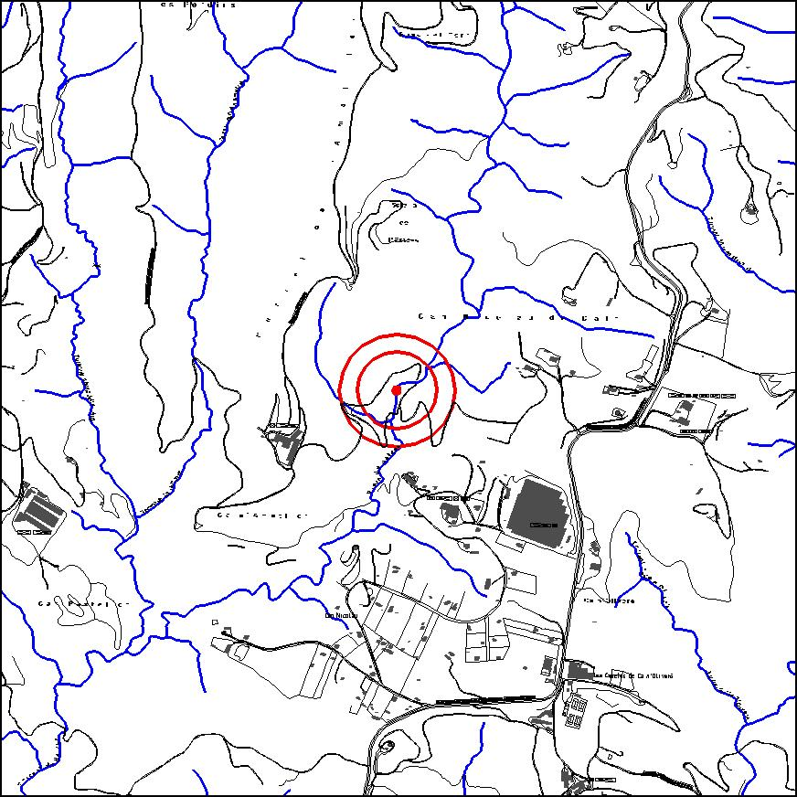
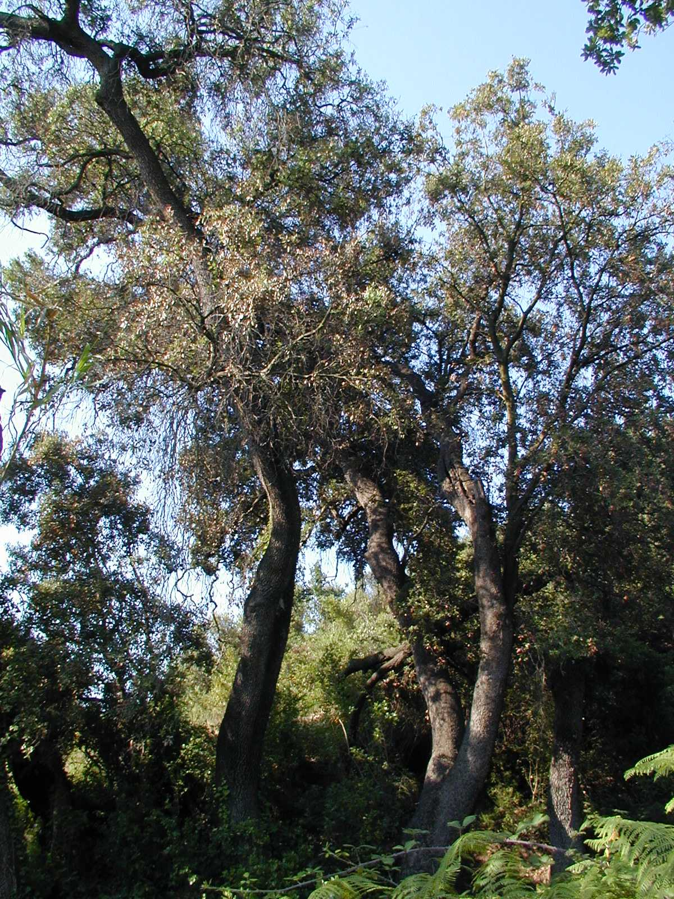

|  |  |
Nom de l’element: Roure de Ca n’Ametller
Clau d’identificació: C.06
Nucli o indret: Serra de l’Ametller.
UTM: X= 413.479, Y= 4.595.630.
Règim del sòl: Sòl no urbanitzable.
1.1 Característiques:
Arbre monumental (roure), que destaca per la seva antiguitat i grans dimensions.
1.2. Estat de conservació:
Bo.
1.3. Ús actual:
Ecològic i monumental.
1.4. Accés:
Accés fàcil des de la pista forestal de Ca n’Ametller a Ullastrell.
Arbre monumental, que destaca per la seva antiguitat i dimensions, així com per la seva qualitat paisatgística.
3.1. Usos admesos:
Espais lliures.
3.2. Condicions d’ordenació:
Segons Pla Especial a redactar.
3.3. Accés
Accés fàcil des de la pista forestal de Ca n’Ametller a Ullastrell.
BPU (Bé Protegit Urbanísticament)